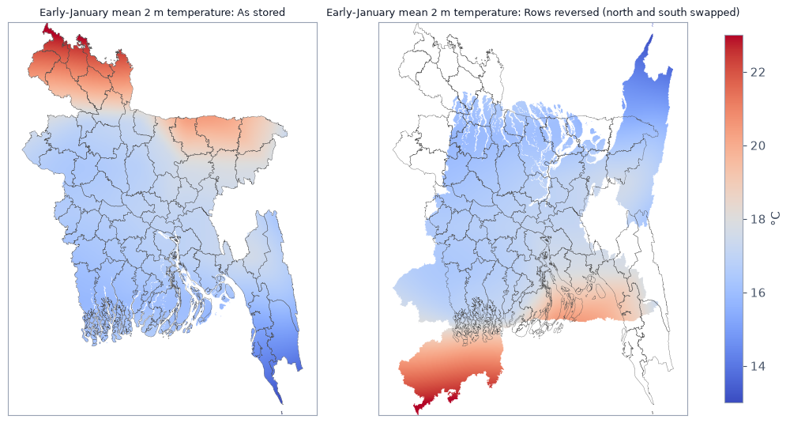
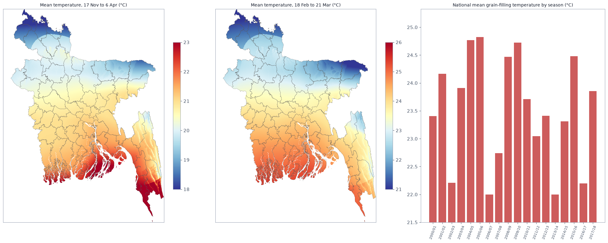
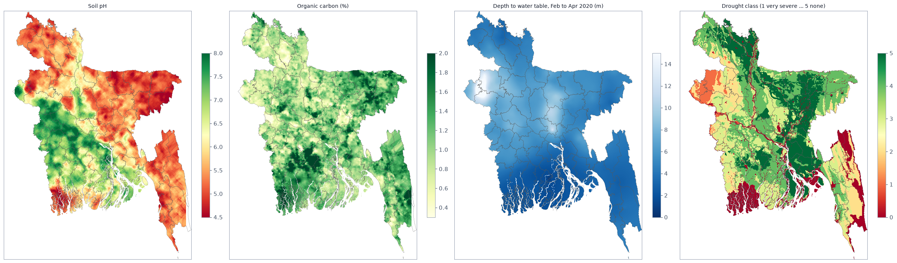
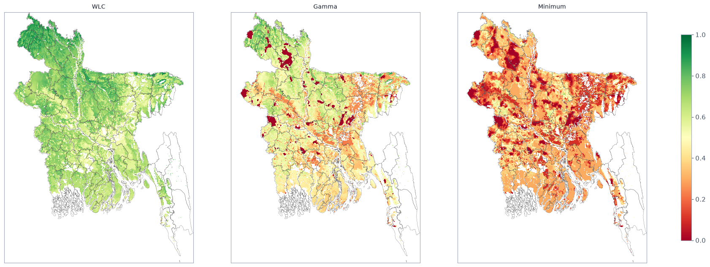
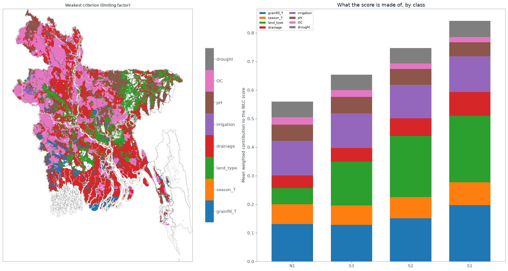
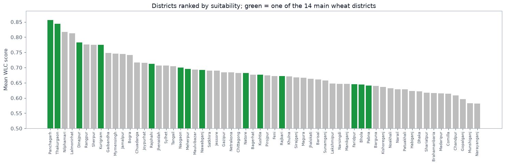
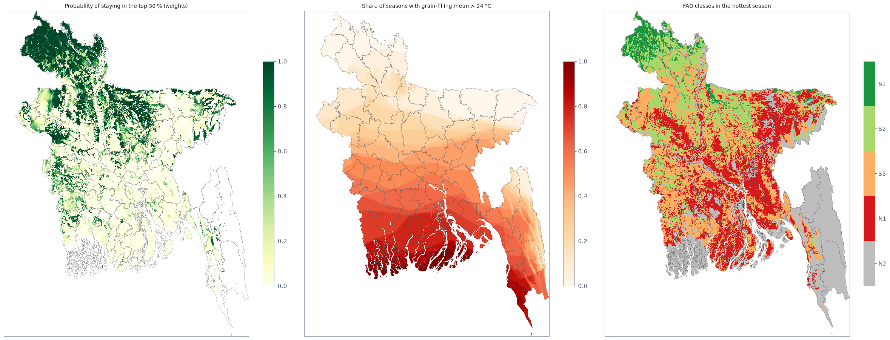

This is Capstone 3 of the spatial analysis module (Part 7). It builds a national land-suitability map for dry-season wheat in Bangladesh at 250 m, using the FAO framework from 03.04: criteria, constraints, fuzzy memberships, AHP weights and suitability classes.
Data: climate, land, soil and constraint layers in data/Wheat_suitability.
Library:geolattice.spatial_analysis
Overview
Wheat is the second cereal of Bangladesh after rice. It is a rabi (dry-season) crop: sown from mid-November to early December on land that has drained after the monsoon, irrigated two or three times, and harvested in March. Two things decide where it does well. The land must be free of water and workable in time for sowing, and the crop must fill its grain before the heat of March: every degree of warming during grain filling costs yield, which is why wheat is concentrated in the cooler north-west.
This capstone builds a national land suitability map for wheat at 250 m resolution following the FAO land-evaluation framework (Module 03.04):
criteria for climate (season and grain-filling temperature), land (land type, drainage, slope), soil (pH, organic carbon) and water (depth to groundwater for irrigation, drought class);
constraints that rule land out (water bodies, settlements, forest, hills, problem soils);
fuzzy membership functions that turn each criterion into a score from 0 to 1;
AHP weights and three ways of combining the scores (weighted linear combination, weighted fuzzy gamma, limiting factor);
FAO suitability classes S1, S2, S3, N1 and N2, summarised by district and upazila;
a validation against the districts that grow most of the country’s wheat, and uncertainty analysis of the weights and of year-to-year heat.
The notebook also contains a real data-quality problem: the temperature grids in the folder are stored upside down. Section 4 shows how it was found and how it is corrected.
Overview
Stage
Question
Main tools
Data and grid
What is in the folder, and on which grid?
AnalysisGrid, warp_to_grid
Temperature check
Are the temperature grids right?
latitude test, row flip, trend and residual gap-fill, hold-out test
Climate criteria
How warm is the season and the grain-filling period?
18 seasons of 16-day 2 m temperature
Land, soil and water criteria
Which land drains in time, has good soil and can be irrigated?
Installation. This notebook needs installation option 2 (core plus spatial analysis): pip install "geolattice[analysis]". See “Installation options” in the GeoLattice README.
Code
# Display matplotlib figures inline in this Jupyter notebook.%matplotlib inline# Standard library imports.import sys # make the capstone helper module importableimport time # report how long the heavier steps takeimport warnings # silence harmless warningsfrom pathlib import Path # filesystem paths# Third-party numeric / geospatial / plotting stack.import geopandas as gpd # district and upazila boundariesimport matplotlib.pyplot as plt # maps and chartsimport numpy as np # arraysimport pandas as pd # tablesfrom IPython.display import display # rich table previewsfrom matplotlib.colors import ListedColormap # class mapsfrom osgeo import gdal # raw access to the 1 km temperature gridsfrom rasterio import features, transform # burn district ids into the gridfrom scipy import ndimage # gap filling and smoothingfrom sklearn.metrics import roc_auc_score # district-level validation# Shared capstone helpers live next to this notebook.sys.path.insert(0, str(Path.cwd()))import data_processing as dp # paths, analysis grid, warping helpersimport geolatticeROOT = Path(geolattice.__file__).resolve().parents[1]ifnot (ROOT /"Data").is_dir(): ROOT = dp.find_repo_root()# GeoLattice tools.from geolattice.spatial_analysis import ( categorical_and, # all constraints must pass jaccard_index, # overlap of two class masks limiting_criterion, # name of the weakest criterion per cell linear, # linear ramp membership monte_carlo_weights, # Dirichlet weight uncertainty score_contributions, # w_i * x_i per criterion slope, # slope gradient from the DEM small, # sigmoid membership, small values -> 1 trapezoidal_mf, # trapezoidal membership with an optimum plateau weighted_fuzzy_overlay, # weighted fuzzy gamma weighted_linear_combination, # weighted linear combination)from geolattice.viz import apply_map_styleapply_map_style()gdal.UseExceptions()warnings.filterwarnings("ignore", category=RuntimeWarning)warnings.filterwarnings("ignore", category=FutureWarning)warnings.filterwarnings("ignore", category=UserWarning)pd.set_option("display.precision", 3)SRC = ROOT /"Data"/"03_spatial_analysis"/"Wheat_suitability"TEMP = SRC /"Temperature"UPAZILA = ROOT /"Data"/"00_shared"/"vector_data"/"Bangladesh"/"Shapefiles"/"bd_upzila_GCS.shp"OUT = dp.capstone_dir(ROOT, "wheat_suitability")print(f"Inputs: {SRC}")print(f"Outputs: {OUT}")
The crop calendar. Wheat in Bangladesh is sown from about 15 November to 5 December and harvested from mid-March to early April, a season of roughly 110 to 120 days. Sowing waits until the land has drained after the monsoon; sowing late pushes grain filling into the hot second half of March.
What limits it.
Heat during grain filling (mid-February to March) is the main climatic limit. The north-west (Panchagarh, Thakurgaon, Dinajpur) has the coolest and longest winter of the country.
Land type and drainage: lowland that is still wet in November cannot be sown in time.
Soil: wheat prefers near-neutral soils; strongly acid terrace and hill soils reduce yield.
Water: two or three irrigations are needed. Shallow tubewells serve land with a shallow water table; the Barind Tract relies on deep tubewells.
Where it is grown. According to the Bangladesh Wheat and Maize Research Institute, 14 districts produce about 90 % of the country’s wheat: Thakurgaon, Chapainawabganj, Natore, Rajshahi, Pabna, Faridpur, Naogaon, Panchagarh, Meherpur, Kushtia, Rajbari, Bhola, Kurigram and Dinajpur (The Daily Star, 16 August 2025). This list is the reference for the validation in Section 13. It reflects where farmers choose wheat, which also depends on prices and on competing crops such as boro rice, maize and potato; a suitability map should agree with it broadly, not perfectly.
Question. Where in Bangladesh is land physically suitable for irrigated rabi wheat, what limits it elsewhere, and how robust is that picture?
The data and one analysis grid
Layer
File
Native grid
Use
Elevation
DEM.tif
250 m
slope, constraint
Land type
LT.tif
250 m
criterion
Drainage class
DRC.tif
250 m
criterion
Soil pH
pH.tif
250 m
criterion
Organic carbon (%)
OC.tif
250 m
criterion
Drought class
DROUGHT.tif
250 m
criterion
General soil type, AEZ
STYPE.tif, AEZ.tif
250 m
constraints
Texture, permeability, slope class, depth class, thermal zone
TEX.tif, SPC.tif, HFC.tif, SDC.tif, exTZONE.tif
250 m
described, not used (see Section 6.4)
2 m temperature: mean, hourly minimum, hourly maximum
Temperature/t2m, mn2t, mx2t, 16-day composites 2000 to 2018
about 1 km
climate criteria
Depth to water table
Watertable_2020/, 16-day 2020
about 1 km
criterion
NDVI, population, land use 2020, monthly rainfall 1901 to 2018
All national 250 m rasters share one grid: a transverse Mercator projection on WGS 84 with central meridian 90 °E, 1,919 x 2,680 cells. That grid is used as the analysis grid, so the 250 m layers are read without resampling and only the 1 km layers are interpolated (bilinear).
Code
dem_ds = gdal.Open(str(SRC /"DEM.tif"))gt = dem_ds.GetGeoTransform()GRID = dp.AnalysisGrid(gt[0], gt[3] - dem_ds.RasterYSize *250.0, gt[0] + dem_ds.RasterXSize *250.0, gt[3],250.0, dem_ds.GetProjection())print(f"Analysis grid: {GRID.shape[0]} rows x {GRID.shape[1]} columns of {GRID.res:.0f} m")LAYERS = {name: dp.warp_to_grid(SRC /f"{name}.tif", GRID) for name in ["DEM", "LT", "DRC", "pH", "OC", "DROUGHT", "STYPE", "AEZ", "TEX", "SPC", "HFC", "SDC", "exTZONE"]}LAND = np.isfinite(LAYERS["DEM"])print(f"Land cells: {LAND.sum():,} ({LAND.sum() *0.0625:,.0f} km²)")LT_NAMES = pd.read_csv(SRC /"IDFILES"/"LT_ID.csv").set_index("LT_ID").LT_Class.to_dict()DRC_NAMES = pd.read_csv(SRC /"IDFILES"/"DRC_ID.csv").set_index("DRC").DRC_CLASS.to_dict()DROUGHT_NAMES = pd.read_csv(SRC /"IDFILES"/"DROUT_ID.csv").set_index("DROUT_ID").DROUT_Class.to_dict()STYPE_NAMES = pd.read_csv(SRC /"IDFILES"/"STYPE_ID.csv").groupby("STYPE").General_Soil_type.apply("; ".join).to_dict()AEZ_NAMES = pd.read_csv(SRC /"IDFILES"/"AEZ_ID.csv").groupby("AEZ").AEZ_NAME.apply("; ".join).to_dict()# Districts and upazilas, in the CRS of the grid.upz = gpd.read_file(UPAZILA).to_crs(GRID.crs)[["ADM3_EN", "ADM3_PCODE", "ADM2_EN", "ADM1_EN", "geometry"]]dist = upz.dissolve("ADM2_EN", as_index=False)[["ADM2_EN", "geometry"]]tr = transform.from_origin(GRID.xmin, GRID.ymax, GRID.res, GRID.res)DIST_ID = features.rasterize(((g, i +1) for i, g inenumerate(dist.geometry)), out_shape=GRID.shape, transform=tr)UPZ_ID = features.rasterize(((g, i +1) for i, g inenumerate(upz.geometry)), out_shape=GRID.shape, transform=tr)print(f"{len(dist)} districts, {len(upz)} upazilas")def show(ax, arr, title, cmap="viridis", vmin=None, vmax=None, outlines=True):"""Map one national grid with district outlines.""" im = ax.imshow(np.where(LAND, arr, np.nan), extent=GRID.extent, cmap=cmap, vmin=vmin, vmax=vmax, interpolation="nearest")if outlines: dist.boundary.plot(ax=ax, color="0.35", linewidth=0.25) ax.set_title(title, fontsize=10) ax.set_xticks([]) ax.set_yticks([])return im
Analysis grid: 2680 rows x 1919 columns of 250 m
Land cells: 2,263,520 (141,470 km²)
64 districts, 544 upazilas
Checking the temperature grids
Mean, minimum and maximum
The folder has three temperature variables. Their names follow ERA5: t2m (mean 2 m temperature), mn2t and mx2t (minimum and maximum). In ERA5, mn2t and mx2t are the extremes within each hour, not within each day. Averaged over 16 days they stay within about a degree of the mean, so they cannot be used for daily-maximum rules such as “days above 30 °C”. The model uses t2m.
Code
rows = []for doy in ("001", "049", "081"): med = {v: np.nanmedian(gdal.Open(str(TEMP / v /f"{v}_2010_{doy}.tif")).ReadAsArray()) for v in ("mn2t", "t2m", "mx2t")} rows.append({"composite": f"2010, day {doy}", **{k: round(float(x), 2) for k, x in med.items()},"mx2t - mn2t": round(float(med["mx2t"] - med["mn2t"]), 2)})display(pd.DataFrame(rows).set_index("composite").rename_axis(columns="national median (°C)"))
national median (°C)
mn2t
t2m
mx2t
mx2t - mn2t
composite
2010, day 001
15.20
16.62
17.99
2.78
2010, day 049
22.37
23.66
24.91
2.54
2010, day 081
28.41
29.12
30.08
1.67
A daily temperature range in Bangladesh in January is 10 to 12 °C; here mx2t - mn2t is under 3 °C, confirming that these are hourly extremes.
Which way is north?
A simple test of any climate grid is its gradient with latitude. In January, Bangladesh is coolest in the far north-west (Panchagarh and Thakurgaon, typically 15 to 17 °C) and warmest on the south-east coast (Cox’s Bazar and Teknaf, 20 to 22 °C). The grids as stored show the opposite.
Code
ref = gdal.Open(str(TEMP /"t2m"/"t2m_2010_049.tif"))T_GT, T_WKT = ref.GetGeoTransform(), ref.GetProjection()T_SHAPE = (ref.RasterYSize, ref.RasterXSize)# Land mask and mean elevation on the 1 km temperature grid.dem1 = gdal.Warp("", str(SRC /"DEM.tif"), format="MEM", width=T_SHAPE[1], height=T_SHAPE[0], outputBounds=(T_GT[0], T_GT[3] + T_SHAPE[0] * T_GT[5], T_GT[0] + T_SHAPE[1] * T_GT[1], T_GT[3]), resampleAlg="average", dstNodata=-9999).ReadAsArray().astype(float)LAND1 = dem1 >-1000jan = np.mean([gdal.Open(str(f)).ReadAsArray().astype(float) for f insorted((TEMP /"t2m").glob("t2m_20??_001.tif"))], axis=0)band = T_SHAPE[0] //10north, south = np.nanmean(jan[:2* band]), np.nanmean(jan[-2* band:])print(f"Early January mean, northern fifth of the grid: {north:.1f} °C; southern fifth: {south:.1f} °C")print("Mask check: share of 1 km cells where 'temperature present' matches 'land in the DEM': "f"{np.mean(np.isfinite(jan) == LAND1):.1%} as stored, {np.mean(np.isfinite(np.flipud(jan)) == LAND1):.1%} if flipped")fig, axes = plt.subplots(1, 2, figsize=(12, 7))ext1 = (T_GT[0], T_GT[0] + T_SHAPE[1] * T_GT[1], T_GT[3] + T_SHAPE[0] * T_GT[5], T_GT[3])for ax, arr, title inzip(axes, (jan, np.flipud(jan)), ("As stored", "Rows reversed (north and south swapped)")): im = ax.imshow(arr, extent=ext1, cmap="coolwarm", vmin=13, vmax=23) dist.boundary.plot(ax=ax, color="0.3", linewidth=0.25) ax.set_title(f"Early-January mean 2 m temperature: {title}", fontsize=9) ax.set_xticks([]) ax.set_yticks([])plt.colorbar(im, ax=axes, fraction=0.025, label="°C")plt.show()
Early January mean, northern fifth of the grid: 21.0 °C; southern fifth: 14.5 °C
Mask check: share of 1 km cells where 'temperature present' matches 'land in the DEM': 98.1% as stored, 72.9% if flipped

What this shows. As stored, the far north is the warmest part of the country in January and the coast the coldest, which is impossible. With the rows reversed, the values follow the known pattern, but the land mask no longer fits: the values were turned upside down before the files were clipped to Bangladesh. This is a common error when a NetCDF file whose latitudes run south to north is written to GeoTIFF without flipping the array. The water-table grid in the same folder does not have this problem: it is deepest under the Barind Tract (Rajshahi, Naogaon, Chapainawabganj), as expected.
Correction
The values for each land cell are recovered by reversing the rows. About a third of the land then has no value, because its mirror cell lay outside Bangladesh and was masked. Temperature at this scale is very smooth (the source reanalysis has cells of about 10 km), so the gaps are filled in two steps:
a trend: a cubic polynomial in position plus mean elevation, fitted to the recovered cells;
the residuals of the recovered cells, spread into the gaps as a Gaussian-weighted mean of nearby residuals (normalised convolution, σ = 15 km).
A hold-out test removes a 60 km wide north-south band of recovered cells, fills it the same way and compares.
Code
R1, C1 = np.indices(T_SHAPE)Y1, X1, Z1 = R1 / T_SHAPE[0], C1 / T_SHAPE[1], np.where(LAND1, dem1, 0) /1000def design(m):return np.c_[np.ones(m.sum()), Y1[m], X1[m], Y1[m] **2, X1[m] **2, X1[m] * Y1[m], Y1[m] **3, Z1[m]]def correct(stored):"""Reverse the rows of a stored 1 km grid and fill the cells lost to masking.""" f = np.flipud(stored) ok = np.isfinite(f) & LAND1 coef, *_ = np.linalg.lstsq(design(ok), f[ok], rcond=None) trend = (design(np.ones(T_SHAPE, bool)) @ coef).reshape(T_SHAPE) resid = np.where(ok, f - trend, 0.0)# Normalised convolution: a Gaussian-weighted mean of the residuals of nearby recovered cells. num = ndimage.gaussian_filter(resid, 15) den = ndimage.gaussian_filter(ok.astype(float), 15) resid_fill = np.where(den >1e-3, num / np.maximum(den, 1e-3), 0.0) out = np.where(ok, f, trend + resid_fill) out[~LAND1] = np.nan r2 =1- np.var(resid[ok]) / np.var(f[ok])return out, r2, okfixed, r2, recovered = correct(jan)test = recovered & (C1 >200) & (C1 <260)held = np.flipud(jan).copy()held[test] = np.nanrefill, _, _ = correct(np.flipud(held))err = refill[test] - np.flipud(jan)[test]print(f"Trend R²: {r2:.3f}; land cells filled: {1- recovered[LAND1].mean():.0%}")print(f"Hold-out band: mean absolute error {np.abs(err).mean():.2f} °C, largest {np.abs(err).max():.2f} °C")
Trend R²: 0.853; land cells filled: 32%
Hold-out band: mean absolute error 0.10 °C, largest 0.77 °C
The trend explains most of the variation (R² about 0.86 for early January) and the residual fill does the rest: in the hold-out band the mean error is under 0.1 °C and the largest under 0.8 °C, far below the 3 to 4 °C differences between regions that matter for wheat. The correction is a workaround, not a fix: re-exporting the temperature series with the latitude axis handled correctly is the proper solution. The function correct checks nothing by itself, so if corrected files replace the current ones, the call to it in the next section must be removed.
Climate criteria
Two climate criteria are computed from 18 seasons (2000/01 to 2017/18) of 16-day composites. Each composite starts on the day of year in its file name.
Criterion
Composites
Calendar
season_T: mean temperature of the season
days 321, 337, 353 of the sowing year and 1 to 81 of the harvest year
17 November to 6 April
grainfill_T: mean temperature during grain filling
days 49 and 65
18 February to 21 March
A few December composites are missing for some years; each mean uses the composites available. The 1 km means are corrected (Section 4.3) and interpolated to the 250 m grid.
Code
SEASONS =range(2001, 2019) # harvest yearsdef composite_files(doys, years=SEASONS): files = []for y in years:for d in doys: f = TEMP /"t2m"/f"t2m_{y -1if d >=300else y}_{d:03d}.tif"if f.exists(): files.append(f)return filesdef to_mem(arr1km):"""Wrap a 1 km array as an in-memory GDAL dataset on the temperature grid.""" mem = gdal.GetDriverByName("MEM").Create("", T_SHAPE[1], T_SHAPE[0], 1, gdal.GDT_Float32) mem.SetGeoTransform(T_GT) mem.SetProjection(T_WKT) band = mem.GetRasterBand(1) band.WriteArray(np.where(np.isfinite(arr1km), arr1km, dp.NODATA)) band.SetNoDataValue(dp.NODATA)return memdef climate_mean(doys, years=SEASONS): files = composite_files(doys, years) stored = np.mean([gdal.Open(str(f)).ReadAsArray().astype(float) for f in files], axis=0) fixed1, _, _ = correct(stored)return dp.warp_to_grid(to_mem(fixed1), GRID, resample="bilinear"), len(files)t0 = time.time()CLIM = {}CLIM["season_T"], n_season = climate_mean([321, 337, 353, 1, 17, 33, 49, 65, 81])CLIM["grainfill_T"], n_gf = climate_mean([49, 65])print(f"Composites used: season {n_season}, grain filling {n_gf}; {time.time() - t0:.0f} s")# Year-by-year grain-filling temperature, for the heat-risk map in Section 14.GF_YEARS = []for y in SEASONS: files = composite_files([49, 65], [y]) stored = np.mean([gdal.Open(str(f)).ReadAsArray().astype(float) for f in files], axis=0) GF_YEARS.append(correct(stored)[0])GF_YEARS = np.stack(GF_YEARS)fig, axes = plt.subplots(1, 3, figsize=(20, 8))im = show(axes[0], CLIM["season_T"], "Mean temperature, 17 Nov to 6 Apr (°C)", "RdYlBu_r", 18, 23)plt.colorbar(im, ax=axes[0], fraction=0.04)im = show(axes[1], CLIM["grainfill_T"], "Mean temperature, 18 Feb to 21 Mar (°C)", "RdYlBu_r", 21, 26)plt.colorbar(im, ax=axes[1], fraction=0.04)nat = np.nanmean(np.where(LAND1, GF_YEARS, np.nan), axis=(1, 2))axes[2].bar([f"{y -1}/{str(y)[2:]}"for y in SEASONS], nat, color="indianred")axes[2].set_ylim(nat.min() -0.5, nat.max() +0.5)axes[2].set_title("National mean grain-filling temperature by season (°C)", fontsize=10)axes[2].tick_params(axis="x", rotation=70, labelsize=8)plt.tight_layout()plt.show()for k, v in CLIM.items():print(f"{k}: {np.nanpercentile(v[LAND], 2):.1f} to {np.nanpercentile(v[LAND], 98):.1f} °C (2nd to 98th percentile)")
Composites used: season 150, grain filling 36; 2 s

season_T: 18.2 to 23.3 °C (2nd to 98th percentile)
grainfill_T: 21.1 to 25.2 °C (2nd to 98th percentile)
During grain filling the north-west is 3 to 4 °C cooler than the south-western and central coast. The national mean also varies from season to season: the hottest season of the record (2005/06) was about 1.4 °C above the average, enough to move a district a good part of the way from northern to southern conditions.
Land, soil and water criteria
Land type and drainage
The soil-survey land type classifies land by its normal depth of seasonal flooding. Highland and medium highland are above normal flood level or drain by October; lowland and very lowland stay wet into the dry season, too late for wheat. Drainage class describes how fast the soil dries after rain or irrigation; poorly drained soils waterlog at sowing.
Soil pH and organic carbon
Both are continuous national maps. Wheat does best at pH 6.0 to 7.5; the acid terrace soils of the Madhupur and Barind tracts and the hill soils fall below 5.5. Organic carbon is a proxy for soil fertility and structure.
Water: groundwater and drought
Irrigation in the dry season comes mostly from groundwater. The depth to the water table from February to April 2020 (the irrigation period) is the criterion. Shallow tubewells stop working below about 7 to 8 m, but wheat needs far less water than boro rice and the Barind Tract irrigates it from deep tubewells, so the membership only falls off past about 12 m. The drought class describes how prone the land is to moisture stress; it is weighted low because irrigated wheat is drought tolerant compared with transplanted rice.
Code
wt = []for d in (33, 49, 65, 81, 97): # 2 February to 21 April a = dp.warp_to_grid(SRC /"Watertable_2020"/f"watertable_2020_{d:03d}.tif", GRID, resample="bilinear", src_srs=T_WKT) a[a <-100] = np.nan wt.append(a)WATER_TABLE = np.nanmean(wt, axis=0)slope(SRC /"DEM.tif", OUT /"slope_deg.tif", overwrite=True, compute_edges=True)SLOPE = dp.read_band(OUT /"slope_deg.tif")[0]fig, axes = plt.subplots(1, 4, figsize=(24, 8))for ax, arr, title, cmap, lims inzip( axes, (LAYERS["pH"], LAYERS["OC"], WATER_TABLE, LAYERS["DROUGHT"]), ("Soil pH", "Organic carbon (%)", "Depth to water table, Feb to Apr 2020 (m)", "Drought class (1 very severe ... 5 none)"), ("RdYlGn", "YlGn", "Blues_r", "RdYlGn"), ((4.5, 8), (0.3, 2), (0, 15), (0, 5))): im = show(ax, arr, title, cmap, *lims) plt.colorbar(im, ax=ax, fraction=0.04)plt.tight_layout()plt.show()

Constraints
Constraints are Boolean: a cell either passes all of them or is classed N2 (permanently unsuitable) whatever its scores.
Constraint
Rule
Not farmland
general soil type 0: water bodies, urban, reserved forest, Sundarbans, Kaptai Lake
Problem soils
acid sulphate soils and peat
Hills
AEZ 29 (Northern and Eastern Hills), or slope above 5°
Very lowland
land type 6: under deep water until late in the dry season
Missing data
land type or drainage class not mapped
Code
CONSTRAINTS = {"farmland": ~np.isin(LAYERS["STYPE"], [0]),"no problem soils": ~np.isin(LAYERS["STYPE"], [11, 12]),"not hills": ~np.isin(LAYERS["AEZ"], [29]) & (np.nan_to_num(SLOPE) <=5),"not very lowland": LAYERS["LT"] !=6,"mapped": np.isin(LAYERS["LT"], [1, 2, 3, 4, 5]) & np.isfinite(LAYERS["DRC"]) & (LAYERS["DRC"] >0),}OK = categorical_and([LAND & c for c in CONSTRAINTS.values()])rows = [(k, np.mean(~c[LAND]) *100) for k, c in CONSTRAINTS.items()]display(pd.DataFrame(rows, columns=["constraint", "% of land failing"]).set_index("constraint").round(1))print(f"Land passing all constraints: {OK.sum() *0.0625:,.0f} km² ({OK.sum() / LAND.sum():.0%} of land)")
% of land failing
constraint
farmland
12.4
no problem soils
1.3
not hills
11.2
not very lowland
1.5
mapped
16.7
Land passing all constraints: 103,088 km² (73% of land)
Fuzzy memberships
Each criterion becomes a membership between 0 (not suitable) and 1 (fully suitable). Continuous criteria use the GeoLattice membership functions; class layers use score tables.
Criterion
Function
Parameters
Reasoning
grainfill_T
linear, decreasing
1 at 21 °C, 0 at 27 °C
each degree of warming during grain filling reduces yield
season_T
trapezoidal_mf
0 at 13, 1 from 15 to 20, 0 at 26 °C
a cool, long season gives time for tillering
land_type
scores
highland and medium highland 1 = 1.0, medium highland 2 = 0.75, medium lowland = 0.35, lowland = 0.1
land must be free of water by mid-November
drainage
scores
well and moderately well drained = 1.0 … very poorly drained = 0.1
The pairwise judgments put grain-filling heat and land type first: they decide whether wheat can be sown in time and whether it can fill its grain. Drainage and irrigation follow; soil chemistry, season temperature and drought are secondary.
Three rules, from fully compensatory to not compensatory at all:
Weighted linear combination (WLC): a weighted mean. A poor score on one criterion can be offset by good scores on others.
Weighted fuzzy gamma (γ = 0.8): between the fuzzy product (all criteria must be good) and the fuzzy sum. Low scores pull the result down more than in WLC.
Limiting factor (minimum): the cell is only as suitable as its worst criterion, following Liebig’s law of the minimum and the FAO practice of classing land by its most severe limitation.
Code
def combine(members, weights): stack = [members[k] for k in CRITERIA] out = {"WLC": weighted_linear_combination(members, weights.to_dict()),"Gamma": weighted_fuzzy_overlay(stack, weights.values, gamma=0.8),"Minimum": np.min(np.stack(stack), axis=0), }return {k: np.where(OK, v, np.nan) for k, v in out.items()}SCORES = combine(MEMBERS, W_AHP)fig, axes = plt.subplots(1, 3, figsize=(21, 9))for ax, (k, v) inzip(axes, SCORES.items()): im = show(ax, v, k, "RdYlGn", 0, 1)plt.colorbar(im, ax=axes, fraction=0.015)plt.show()display(pd.DataFrame({k: pd.Series(v[OK]).describe(percentiles=[0.1, 0.5, 0.9]) for k, v in SCORES.items()}) .T[["mean", "10%", "50%", "90%"]].round(3))

mean
10%
50%
90%
WLC
0.691
0.567
0.694
0.808
Gamma
0.459
0.235
0.478
0.649
Minimum
0.262
0.100
0.300
0.405
All three rules agree on the pattern: the north-west is the most suitable region, followed by the High Ganges and Old Brahmaputra floodplains, while the coast, the haors and the hills are poor. They differ in level and contrast. WLC averages away single weaknesses, gamma penalises them, and the minimum is set entirely by the weakest criterion, which for much of the country is drainage or land type.
FAO suitability classes
The FAO framework uses five classes. Here they are cut from the WLC score, the headline model:
Class
Meaning
WLC score
S1
highly suitable
at least 0.80
S2
moderately suitable
0.70 to 0.80
S3
marginally suitable
0.60 to 0.70
N1
currently not suitable
below 0.60
N2
permanently not suitable
fails a constraint
The break points are a choice: they are set so that S1 picks out land with no serious limitation, and their effect is tested in Section 14.
limiting_criterion returns the criterion with the lowest membership in each cell: the first thing to fix, or the reason land is not better. score_contributions splits the WLC score into its weighted parts.
Code
lim = limiting_criterion({k: np.where(OK, MEMBERS[k], np.inf) for k in CRITERIA})LIMIT = np.full(GRID.shape, np.nan)for i, k inenumerate(CRITERIA): LIMIT[(lim == k) & OK] = ilim_tab = pd.DataFrame({ cname: [np.mean(LIMIT[CLS == ci] == i) *100for i inrange(len(CRITERIA))]for ci, cname inenumerate(CLASS_NAMES) if ci >0}, index=CRITERIA)display(lim_tab.round(1).rename_axis(columns="% of class area where the criterion is the weakest"))contrib = score_contributions({k: MEMBERS[k] for k in CRITERIA}, W_AHP.to_dict())contrib_tab = pd.DataFrame({cname: [np.nanmean(contrib[k][CLS == ci]) for k in CRITERIA]for ci, cname inenumerate(CLASS_NAMES) if ci >0}, index=CRITERIA)fig, axes = plt.subplots(1, 2, figsize=(20, 10), gridspec_kw={"width_ratios": [1, 1]})cmap_lim = ListedColormap(plt.cm.tab10.colors[:len(CRITERIA)])im = show(axes[0], LIMIT, "Weakest criterion (limiting factor)", cmap_lim, -0.5, len(CRITERIA) -0.5)cb = plt.colorbar(im, ax=axes[0], fraction=0.035, ticks=range(len(CRITERIA)))cb.ax.set_yticklabels(CRITERIA)contrib_tab.T.plot.bar(stacked=True, ax=axes[1], color=plt.cm.tab10.colors[:len(CRITERIA)], width=0.7)axes[1].set_ylabel("Mean weighted contribution to the WLC score")axes[1].set_title("What the score is made of, by class")axes[1].legend(fontsize=8, ncol=2)axes[1].tick_params(axis="x", rotation=0)plt.tight_layout()plt.show()
% of class area where the criterion is the weakest
N1
S3
S2
S1
grainfill_T
0.6
3.5
7.9
2.3
season_T
0.0
0.0
0.0
0.0
land_type
56.2
13.3
0.2
0.0
drainage
27.4
53.8
37.7
22.0
irrigation
0.0
0.9
0.5
0.0
pH
3.4
7.4
11.3
22.1
OC
12.3
21.1
42.4
53.3
drought
0.0
0.0
0.1
0.1

Reading the limiting factors. In N1 land the weakest criterion is mostly land type (lowland that is still wet at sowing), followed by drainage. In S3 land it is mostly drainage: the national soil map classes much of the floodplain as poorly drained. In S2 and S1 land the weak points are organic carbon and pH, criteria that liming, manure and residue management can improve. Grain-filling heat is rarely the single weakest criterion, because its membership falls gradually; its effect shows in the weighted score and in the hot-season test of Section 14.
Validation against the wheat districts
The 14 districts named in Section 2 grow about 90 % of the country’s wheat. If the map is right, they should rank high. Two measures per district:
the mean WLC score of land passing the constraints (only for districts where at least a quarter of the land passes them; otherwise a few valley cells in the hill districts would stand for the whole district);
the share of land that is S1 or S2.
The AUC is the probability that a randomly chosen wheat district scores higher than a randomly chosen other district (0.5 = no better than chance). Because farmers’ choices also depend on markets and on competing crops, a perfect score is not expected.
The model is also run with the strict water criteria an analyst might start from: irrigation falling off past 7 m (shallow-tubewell depth) and drought scored 0.2 for very severe to 1.0 for none.
Code
MAJOR = ["Thakurgaon", "Nawabganj", "Natore", "Rajshahi", "Pabna", "Faridpur", "Naogaon", "Panchagarh", "Meherpur","Kushtia", "Rajbari", "Bhola", "Kurigram", "Dinajpur"] # Nawabganj = Chapainawabganj in the boundary fileMIN_FARMLAND =0.25# districts with less land passing the constraints are not ranked on the mean scoredef district_table(score_, cls): rows = []for i, name inenumerate(dist.ADM2_EN, start=1): m = (DIST_ID == i) & LAND ok = m & OK share_ok = ok.sum() /max(m.sum(), 1) rows.append((name, np.nanmean(score_[ok]) if share_ok >= MIN_FARMLAND else np.nan, np.mean(cls[m] >=3) *100, share_ok *100, name in MAJOR))return pd.DataFrame(rows, columns=["district", "mean_score", "S1_S2_pct", "farmland_pct", "major_wheat"]) \ .set_index("district")strict = memberships(irrigation_midpoint=7.0, drought_table={1: 0.2, 2: 0.4, 3: 0.7, 4: 0.9, 5: 1.0})strict_wlc = combine(strict, W_AHP)["WLC"]RUNS = {"WLC (headline)": (SCORES["WLC"], CLS), "Gamma": (SCORES["Gamma"], fao_classes(SCORES["Gamma"], (0.4, 0.5, 0.6))),"Minimum": (SCORES["Minimum"], fao_classes(SCORES["Minimum"], (0.3, 0.4, 0.5))),"WLC, strict water criteria": (strict_wlc, fao_classes(strict_wlc))}rows = []for name, (s, c) in RUNS.items(): t = district_table(s, c) tr_ = t.dropna(subset=["mean_score"]) top14 = tr_.mean_score.nlargest(14).index rows.append((name, roc_auc_score(tr_.major_wheat, tr_.mean_score), roc_auc_score(t.major_wheat, t.S1_S2_pct),int(np.sum(t.loc[top14, "major_wheat"]))))display(pd.DataFrame(rows, columns=["model", "AUC (mean score)", "AUC (S1+S2 share)", "wheat districts among top 14"]) .set_index("model").round(3))DT = district_table(SCORES["WLC"], CLS).dropna(subset=["mean_score"]).sort_values("mean_score", ascending=False)print(f"Districts ranked: {len(DT)} of {len(dist)}; not ranked (less than {MIN_FARMLAND:.0%} farmland): "f"{', '.join(sorted(set(dist.ADM2_EN) -set(DT.index)))}")fig, ax = plt.subplots(figsize=(18, 4.5))ax.bar(DT.index, DT.mean_score, color=np.where(DT.major_wheat, "#1a9641", "#bdbdbd"))ax.set_ylim(0.5, DT.mean_score.max() +0.03)ax.set_ylabel("Mean WLC score")ax.set_title("Districts ranked by suitability; green = one of the 14 main wheat districts")ax.tick_params(axis="x", rotation=90, labelsize=8)plt.show()
AUC (mean score)
AUC (S1+S2 share)
wheat districts among top 14
model
WLC (headline)
0.674
0.704
4
Gamma
0.595
0.697
4
Minimum
0.430
0.722
2
WLC, strict water criteria
0.531
0.563
4
Districts ranked: 60 of 64; not ranked (less than 25% farmland): Bandarban, Cox's Bazar, Khagrachhari, Rangamati

Reading the validation. Agreement is moderate (AUC about 0.67 on the mean score and 0.70 on the S1 + S2 share). The four hill districts (Bandarban, Cox’s Bazar, Khagrachhari, Rangamati) are not ranked: less than a quarter of their land passes the constraints. The north-western wheat districts (Thakurgaon, Panchagarh, Dinajpur, Kurigram) are among the highest-ranked districts in the country. The Ganges-floodplain wheat districts (Rajshahi, Natore, Naogaon, Pabna, Kushtia, Meherpur, Faridpur, Rajbari) sit in the middle: warmer during grain filling, with deep water tables in the Barind and much poorly drained land. Several high-ranking districts that are not on the list lie in the same cool north (Nilphamari, Lalmonirhat, Rangpur, Gaibandha, Bogura) or in the north-centre (Sherpur, Jamalpur, Mymensingh), where potato, maize and boro rice compete for the same land in the same season. Bhola, a coastal island district, is on the list although its grain-filling temperatures are high: the model would need sowing dates and local soil detail to explain it.
The strict water criteria rank the Barind districts much lower and agree clearly less with where wheat is grown (AUC about 0.5, no better than chance), which is why the headline model uses the deep-tubewell setting. The minimum rule ranks the wheat districts worst of all on the mean score: one poor criterion anywhere in a district drags it down.
Uncertainty
Weights
monte_carlo_weights draws 300 weight vectors from a Dirichlet distribution centred on the AHP weights and records, for every cell, how often it stays in the top 30 % of WLC scores (roughly the S1 and S2 classes).
Code
idx_ok = np.flatnonzero(OK.ravel())M = np.stack([MEMBERS[k].ravel()[idx_ok] for k in CRITERIA])t0 = time.time()mc = monte_carlo_weights(M, W_AHP.values, kappa=50.0, n=300, batch=10, top_q=0.7, seed=3)P_TOP = np.full(int(np.prod(GRID.shape)), np.nan)P_TOP[idx_ok] = mc["p_top"]P_TOP = P_TOP.reshape(GRID.shape)print(f"Monte Carlo weights in {time.time() - t0:.0f} s; median Jaccard of the top-30 % set vs the AHP baseline: "f"{np.median(mc['jaccard']):.2f}")
Monte Carlo weights in 40 s; median Jaccard of the top-30 % set vs the AHP baseline: 0.80
A hot season
The climate criteria use the 18-season mean. To see how a single season changes the picture, the share of seasons in which the grain-filling mean exceeded 24 °C is mapped (about 3 °C above the coolest districts). The WLC is also recomputed with the grain-filling temperature of the hottest season in the record.
Code
HOT =24.0hot_share1 = np.mean(GF_YEARS > HOT, axis=0)HOT_SHARE = dp.warp_to_grid(to_mem(np.where(LAND1, hot_share1, np.nan)), GRID, resample="bilinear")hottest =int(np.argmax(nat))hot_gf = dp.warp_to_grid(to_mem(GF_YEARS[hottest]), GRID, resample="bilinear")hot_members =dict(MEMBERS)hot_members["grainfill_T"] = np.where(OK, np.clip(linear(hot_gf, 27.0, 21.0), 0, 1), np.nan)hot_cls = fao_classes(combine(hot_members, W_AHP)["WLC"])print(f"Hottest grain-filling period: {list(SEASONS)[hottest] -1}/{list(SEASONS)[hottest]} "f"(national mean {nat[hottest]:.1f} °C vs {nat.mean():.1f} °C on average)")comp = pd.DataFrame({"average season": [np.sum(CLS == i) *0.0625for i inrange(5)],"hottest season": [np.sum(hot_cls == i) *0.0625for i inrange(5)]}, index=CLASS_NAMES)display(comp.round(0).rename_axis(columns="km²"))print("Jaccard index of class masks:")for a, b in [("WLC (headline)", "Gamma"), ("WLC (headline)", "Minimum"), ("WLC (headline)", "WLC, strict water criteria")]:print(f" S1+S2, {a} vs {b}: {jaccard_index(RUNS[a][1] >=3, RUNS[b][1] >=3):.2f}")print(f" S1+S2, average vs hottest season: {jaccard_index(CLS >=3, hot_cls >=3):.2f}")for brk in [(0.58, 0.68, 0.78), (0.62, 0.72, 0.82)]:print(f" S1+S2, breaks {BREAKS} vs {brk}: {jaccard_index(CLS >=3, fao_classes(SCORES['WLC'], brk) >=3):.2f}")fig, axes = plt.subplots(1, 3, figsize=(24, 9))im = show(axes[0], P_TOP, "Probability of staying in the top 30 % (weights)", "YlGn", 0, 1)plt.colorbar(im, ax=axes[0], fraction=0.04)im = show(axes[1], HOT_SHARE, f"Share of seasons with grain-filling mean > {HOT:.0f} °C", "OrRd", 0, 1)plt.colorbar(im, ax=axes[1], fraction=0.04)im = show(axes[2], hot_cls, "FAO classes in the hottest season", CLASS_CMAP, -0.5, 4.5)cb = plt.colorbar(im, ax=axes[2], fraction=0.04, ticks=range(5))cb.ax.set_yticklabels(CLASS_NAMES)plt.tight_layout()plt.show()
Hottest grain-filling period: 2005/2006 (national mean 24.8 °C vs 23.5 °C on average)
km²
average season
hottest season
N2
38382.0
38382.0
N1
20209.0
36219.0
S3
33256.0
38478.0
S2
37519.0
22974.0
S1
12104.0
5416.0
Jaccard index of class masks:
S1+S2, WLC (headline) vs Gamma: 0.83
S1+S2, WLC (headline) vs Minimum: 0.19
S1+S2, WLC (headline) vs WLC, strict water criteria: 0.66
S1+S2, average vs hottest season: 0.57
S1+S2, breaks (0.6, 0.7, 0.8) vs (0.58, 0.68, 0.78): 0.88
S1+S2, breaks (0.6, 0.7, 0.8) vs (0.62, 0.72, 0.82): 0.85

Reading the uncertainty. The weights matter moderately: a typical random weight vector keeps about 80 % of the baseline top-30 % set, and the core of the north-west stays in it under almost every vector. Moving the class break points by 0.02 keeps 85 to 88 % of the S1 + S2 land. The combination rule matters much more: the minimum rule shares only about a fifth of its S1 + S2 land with WLC, because it ignores everything except the weakest criterion. Heat is the largest source of year-to-year risk. In the hottest season of the record (2005/06), S1 + S2 land shrinks from about 49,600 to 28,400 km², and the share of seasons above 24 °C rises steadily from the north-west, where it is near zero, to the coast, where it is nearly every season. That is the practical case for early sowing and heat-tolerant varieties outside the north-west. (The straight-edged contours in the heat map are already in the source grids: the reanalysis was interpolated to 1 km by triangulation before export.)
District and upazila summaries
Code
rows = []for i, r inenumerate(dist.itertuples(), start=1): m = (DIST_ID == i) & LAND rows.append((r.ADM2_EN, m.sum() *0.0625, *[np.sum(CLS[m] == c) *0.0625for c in (4, 3, 2)], np.nanmean(SCORES["WLC"][m & OK]) if (m & OK).any() else np.nan, r.ADM2_EN in MAJOR))DIST_SUM = pd.DataFrame(rows, columns=["district", "land_km2", "S1_km2", "S2_km2", "S3_km2", "mean_wlc", "major_wheat"])DIST_SUM["S1_S2_pct"] = (DIST_SUM.S1_km2 + DIST_SUM.S2_km2) / DIST_SUM.land_km2 *100DIST_SUM = DIST_SUM.sort_values("S1_S2_pct", ascending=False).reset_index(drop=True)display(DIST_SUM.head(15).round(1))rows = []for i, r inenumerate(upz.itertuples(), start=1): m = (UPZ_ID == i) & LANDif m.sum() ==0:continue rows.append((r.ADM3_EN, r.ADM2_EN, m.sum() *0.0625, np.sum(CLS[m] ==4) *0.0625, np.sum(CLS[m] >=3) *0.0625))UPZ_SUM = pd.DataFrame(rows, columns=["upazila", "district", "land_km2", "S1_km2", "S1_S2_km2"])UPZ_SUM["S1_S2_pct"] = UPZ_SUM.S1_S2_km2 / UPZ_SUM.land_km2 *100print("Upazilas with the largest area of S1 + S2 land:")display(UPZ_SUM.sort_values("S1_S2_km2", ascending=False).head(15).round(1).reset_index(drop=True))
district
land_km2
S1_km2
S2_km2
S3_km2
mean_wlc
major_wheat
S1_S2_pct
0
Rangpur
2342.8
732.1
1532.1
8.9
0.8
False
96.6
1
Thakurgaon
1812.0
1353.6
384.7
6.1
0.8
True
95.9
2
Nilphamari
1587.7
823.3
696.1
4.7
0.8
False
95.7
3
Panchagarh
1361.2
1105.3
153.4
0.9
0.9
True
92.5
4
Dinajpur
3457.9
1336.4
1670.5
381.9
0.8
True
87.0
5
Lalmonirhat
1243.3
575.2
442.7
19.2
0.8
False
81.9
6
Sherpur
1321.1
394.1
684.0
123.3
0.8
False
81.6
7
Gaibandha
2164.2
343.8
1349.1
208.1
0.7
False
78.2
8
Bogra
2911.2
411.7
1788.4
498.9
0.7
False
75.6
9
Mymensingh
4345.3
1182.6
1974.0
863.5
0.7
False
72.6
10
Jamalpur
2063.5
434.2
1060.2
401.8
0.7
False
72.4
11
Kurigram
2258.5
639.3
878.5
189.2
0.8
True
67.2
12
Chuadanga
1164.3
0.0
757.7
258.4
0.7
False
65.1
13
Jhenaidah
1954.6
4.1
1252.5
386.1
0.7
False
64.3
14
Joypurhat
958.7
1.5
609.8
328.4
0.7
False
63.8
Upazilas with the largest area of S1 + S2 land:
upazila
district
land_km2
S1_km2
S1_S2_km2
S1_S2_pct
0
Thakurgaon Sadar
Thakurgaon
693.0
593.9
690.1
99.6
1
Mitha Pukur
Rangpur
519.5
153.8
516.6
99.4
2
Phulpur
Mymensingh
567.9
346.4
433.8
76.4
3
Birganj
Dinajpur
415.0
328.6
413.2
99.6
4
Gobindaganj
Gaibandha
467.8
96.8
402.4
86.0
5
Pirganj
Rangpur
409.1
134.6
397.6
97.2
6
Jamalpur Sadar
Jamalpur
495.8
147.7
387.8
78.2
7
Godagari
Rajshahi
491.4
0.0
386.8
78.7
8
Patnitala
Naogaon
387.4
1.4
380.8
98.3
9
Parbatipur
Dinajpur
394.2
83.3
368.3
93.4
10
Mahadebpur
Naogaon
386.5
41.3
366.2
94.7
11
Nilphamari Sadar
Nilphamari
375.1
189.6
363.3
96.9
12
Madhupur
Tangail
365.6
49.1
344.4
94.2
13
Pirganj
Thakurgaon
347.4
211.8
335.9
96.7
14
Sundarganj
Gaibandha
414.8
40.9
329.6
79.5
Outputs
All rasters are GeoTIFFs on the national 250 m grid in Data/03_spatial_analysis/capstone_spatial_analysis/wheat_suitability/.
Code
for k, v in CLIM.items(): GRID.write(OUT /f"{k}_corrected_250m.tif", np.where(LAND, v, np.nan))for k, v in MEMBERS.items(): GRID.write(OUT /f"membership_{k}_250m.tif", v)for k, v in SCORES.items(): GRID.write(OUT /f"suitability_{k}_250m.tif", v)GRID.write(OUT /"fao_class_wlc_250m.tif", CLS)GRID.write(OUT /"limiting_factor_250m.tif", LIMIT)GRID.write(OUT /"p_top30_weights_250m.tif", P_TOP)GRID.write(OUT /"hot_season_share_250m.tif", np.where(LAND, HOT_SHARE, np.nan))GRID.write(OUT /"fao_class_hottest_season_250m.tif", hot_cls)pd.Series(dict(enumerate(CRITERIA)), name="criterion").to_csv(OUT /"limiting_factor_codes.csv")pd.Series(dict(enumerate(CLASS_NAMES)), name="class").to_csv(OUT /"fao_class_codes.csv")W_AHP.rename("weight").to_csv(OUT /"ahp_weights.csv")DIST_SUM.to_csv(OUT /"district_summary.csv", index=False)UPZ_SUM.to_csv(OUT /"upazila_summary.csv", index=False)dist.merge(DIST_SUM, left_on="ADM2_EN", right_on="district").to_file(OUT /"district_summary.gpkg", driver="GPKG")for p insorted(OUT.glob("*.*")):print(f"{p.name:45s}{p.stat().st_size /1024:8.0f} KB")
Temperature grids. The stored files are upside down. The correction recovers two thirds of the land cells exactly and fills the rest from a smooth trend; it is accurate to a few hundredths of a degree in a hold-out test, but the files should be re-exported. Only mean temperature is usable; the mn2t and mx2t grids are hourly extremes, so daily-maximum heat rules cannot be applied.
Salinity is missing. Large parts of the south-western and south-central coast are saline in the dry season, which rules out wheat. No salinity map is in the folder, so the coastal classes are too optimistic where salinity, not temperature, is the binding limit.
Soil maps are generalised. Land type, drainage, pH and organic carbon come from the national soil survey at reconnaissance scale. A 250 m cell carries the dominant class of a mapping unit, not the field.
Water. The water table is from one year (2020) and does not include surface-water irrigation or the cost of pumping.
Validation is coarse. The reference is a list of districts, not wheat fields, and it mixes suitability with economics. District statistics of wheat area (BBS) or a wheat map from Sentinel-2 would allow a much sharper test.
Unused layers. Texture has no legend; permeability, depth class and thermal zone are undocumented or redundant.
Where to go next
Re-export the 2000 to 2018 temperature composites with the latitude axis handled correctly and rerun without correct.
Add a soil salinity layer (SRDI) as a constraint or criterion for the coastal districts.
Validate against upazila wheat area from the BBS Yearbook of Agricultural Statistics, or against a wheat map classified from Sentinel-2 time series in February.
Model sowing date: flood recession from Sentinel-1 in October and November decides when each field can be sown, and therefore how much March heat the crop meets.
Add wheat blast risk zones for the south-western districts affected since 2016.
Repeat the analysis for maize, which competes with wheat for the same land in the same season, and map where each crop has the advantage.